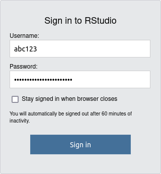
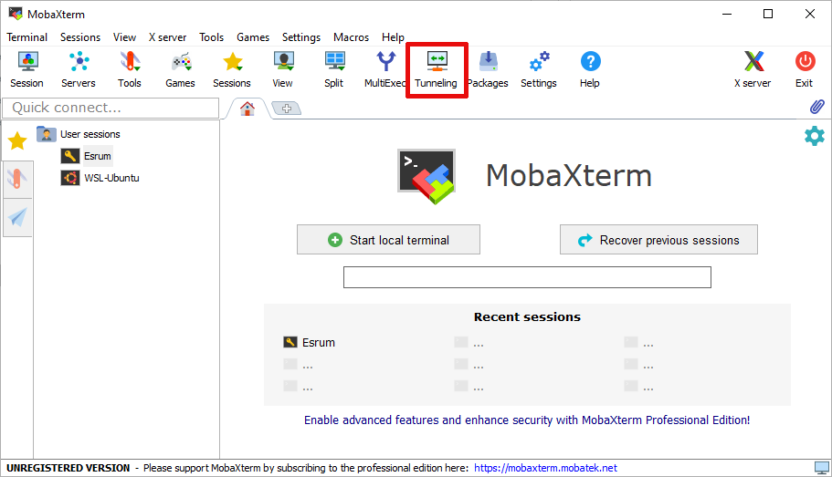
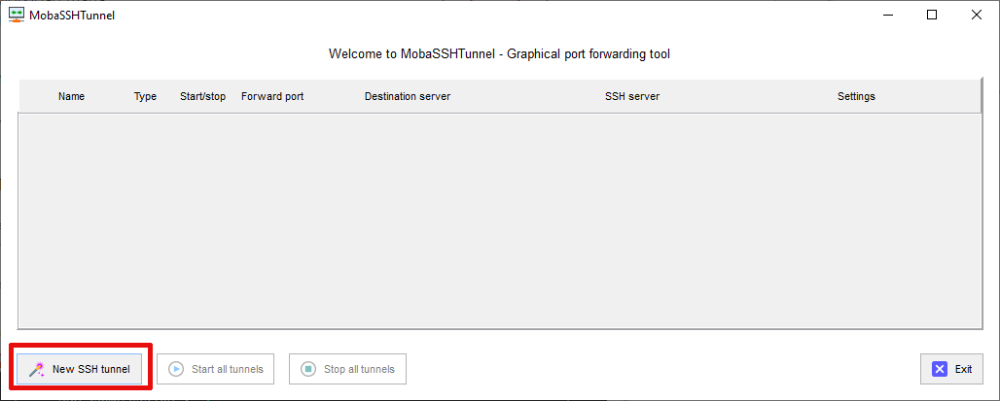
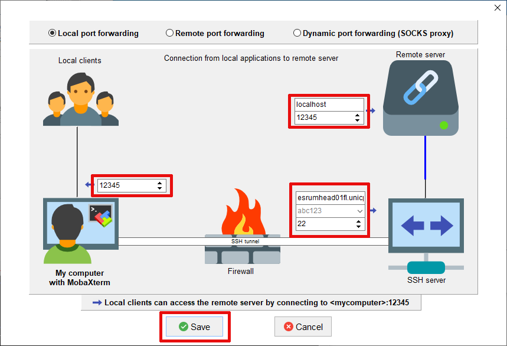

5.1. R, RStudio, and Jupyter Notebooks¶
Users of the Esrum cluster have the option of using R, RStudio or Jupyter Notebooks to run their analyses. This section describes steps required to use these tools.
5.1.1. R¶
R is available via the module system and modules may be installed in
your home folder using the install.packages command:
$ module load --auto R/4.3.1
Loading R/4.3.1
Loading requirement: gcc/11.2.0
$ R
> install.packages("ggplot2")
Warning in install.packages("ggplot2") :
'lib = "/opt/software/R/4.3.1/lib64/R/library"' is not writable
Would you like to use a personal library instead? (yes/No/cancel) yes
Would you like to create a personal library
‘/home/abc123/R/x86_64-pc-linux-gnu-library/4.3’
to install packages into? (yes/No/cancel) yes
When asked to pick a mirror, either pick 0-Cloud by entering 1
and pressing enter, or enter the number corresponding to a location near
you and press enter:
--- Please select a CRAN mirror for use in this session ---
Secure CRAN mirrors
1: 0-Cloud [https]
[...]
Selection: 1
See below if you get an libtk8.6.so: cannot open shared object file:
No such file or directory or similar error.
5.1.2. RStudio¶
An RStudio server is made available at http://esrumcont01fl:8787/. To use this server, you must
Be a member of the
SRV-esrumcont-usersgroup. Simply follow the steps in the Applying for access to the cluster section, and apply for access to this group.Be connected via the KU VPN (a wired connection at CBMR is not sufficient). See Connecting to the cluster for more information.
Once you have been been made a member of the SRV-esrumcont-users and
connected using the VPN or a wired connection at CBMR, simply visit
http://esrumcont01fl:8787/ and login using your KU credentials.
For your username you should use the short form:
Note
The RStudio server is managed by KU-IT and we can only provide basic basic support for using this service.
5.1.3. Jupyter notebook¶
Jupyter Notebooks are available via the module system on Esrum and may be started as follows:
$ module load jupyter-notebook
$ jupyter notebook --no-browser --port=XXXXX
It is also recommended that you run your notebook in a tmux session or similar, to avoid the notebook shutting down if you lose connection to the server. See Persistent sessions with tmux for more information.
To actually connect to the notebook server, you will need to setup port forwarding using the port-number from your command.
5.1.3.1. Port forwarding in Windows (MobaXterm)¶
The following instructions assume that you are using MobaXterm. If not, then please refer to the documentation for your tool of choice.
Install and configure MobaXterm as described in Configuring MobaXterm.
Click the middle
Tunnelingbutton on the toolbar.Click the bottom-left
New SSH Tunnelbutton.Fill out the tunnel dialogue as indicated, replacing
12356with your chosen port number (e.g. XXXXX) and replacingabc123with your KU username. The full name of the SSH server (written in the top row on bottom right) isesrumhead01fl.unicph.domain. Finally clickSave:If the tunnel does not start automatically, press either the "Play" button or the
Start all tunnelsbutton:
Enter your password and your SSH tunnel should now be active.
Once you have configured MobaXterm and enabled port forwarding, you can
open your notebook via the
http://localhost:XXXXX/?token=${long_text_here} URL that Jupyter
Notebook printed in your terminal.
5.1.3.2. Port forwarding on Linux/OSX¶
It is recommended to enable port forwarding using your ~/.ssh/config
file. This is accomplished by adding a LocalForward line to your
entry for Esrum as shown below (see also the section about
Connecting on Linux or OSX):
Host esrum esrumhead01fl esrumhead01fl.unicph.domain
HostName esrumhead01fl.unicph.domain
User abc123
LocalForward XXXXX localhost:XXXXX
The LocalForward option consists of two parts: The port used by the
notebook on Esrum (XXXXX), and the address via which the notebook on
Esrum should be accessible on your PC (localhost:XXXXX).
Alternatively, you can start start/stop port forwarding on demand by
using an explicit SSH command. The -N option is optional and stops
ssh from starting a shell once it has connected to Esrum:
$ ssh -N -L XXXXX:localhost:XXXXX abc123@esrumhead01fl.unicph.domain
Once you have port forwarding is enabled, you can open your notebook via
the http://localhost:XXXXX/?token=${long_text_here} URL that Jupyter
Notebook printed in your terminal.
5.1.4. Troubleshooting¶
5.1.4.2. RStudio: Incorrect or invalid username/password¶
Please make sure that you are entering your username in the short form
and that you have been added as a member of the SRV-esrumcont-users
group (see above). If the problem persists, please Contact us
for assistance.
5.1.4.3. RStudio: Logging in takes a very long time¶
Similar to regular R, RStudio will automatically save the data you have loaded into your R session and will restore it when you return later, so that you can continue your work. However, this many result in large amounts of data being saved and loading this data may result in a large delay when you attempt to login at a later date.
It is therefore recommended that you regularly clean up your workspace using the built in tools, when you no longer need to have the data loaded in R.
You can remove individual bits of data using the rm function in R.
This works both when using regular R and when using RStudio. The
following gives two examples of using the rm function, one removing
a single variable and the other removing all variables in the current
session:
# 1. Remove the variable `my_variable`
rm(my_variable)
# 2. Remove all variables from your R session
rm(list = ls())
Alternatively you can remove all data saved in your R session using the
broom icon on the Environment tab:


If you wish to prevent this issue in the first case, then you can also
turn off saving the data in your session on exit and/or turn off loading
the saved data on startup. This is accomplished via the Global
Options... accessible from the Tools menu:

Should your R session have grown to such a size that you simply cannot login and clean it up, then it my be necessary to remove the files containing the data that R/RStudio has saved. This data is stored in two locations:
In the
.RDatafile in your home (~/.RData). This is where R saves your data if you answer yesSave workspace image? [y/n/c]when quitting R.In the
environmentfile in your RStudio session folder (~/.local/share/rstudio/sessions/active/session-*/suspended-session-data/environment). This is where Rstudio saves your data should your login time-out while using RStudio.
Please Contact us and we can help you remove the correct files.
5.1.4.4. Jupyter Notebooks: Browser error when opening URL¶
Depending on your browser you may receive one of the following errors. The typical causes are listed, but the exact error message will depend on your browser. It is therefore helpful to review all possible causes listed here.
When using Chrome, the cause is typically listed below the line that says "This site can't be reached".
"The connection was reset"
This typically indicates that Jupyter Notebook isn't running on the server, or that it is running on a different port than the one you've forwarded. Check that Jupyter Notebook is running and make sure that your forwarded ports match those used by Jupyter Notebook on Esrum.
"localhost refused to connect" or "Unable to connect"
This typically indicates that port forwarding isn't active, or that you have entered the wrong port number in your browser. Verify that port forwarding is active and that you are using the correct port number in the
localhostURL."Check if there is a typo in esrumcont01fl" or "We're having trouble finding that site"
You are must likely connecting from a network outside of KU. Make sure that you are using a wired connection at CBMR and/or that the VPN is activated and try again.